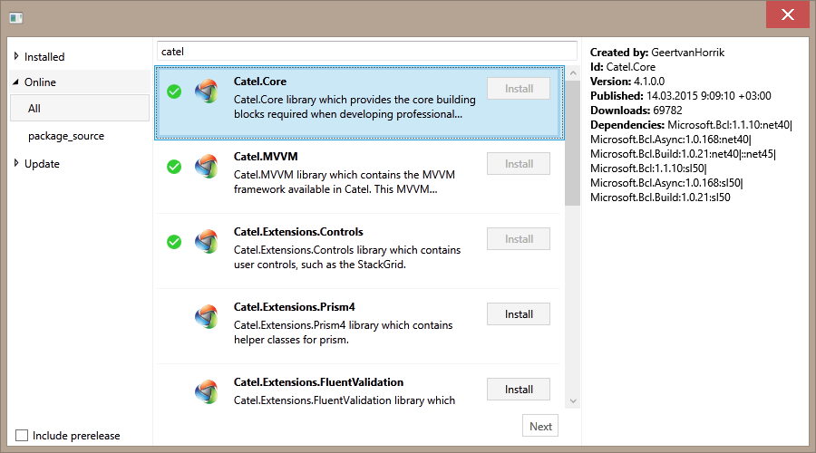
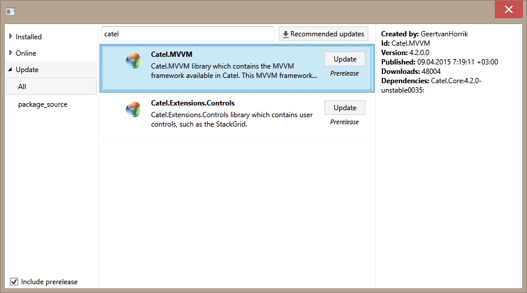
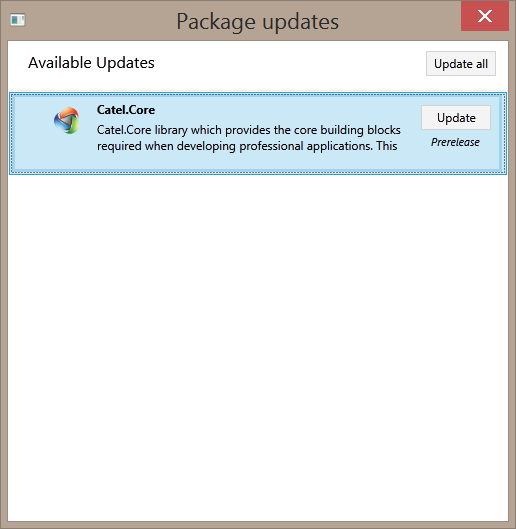

Find the source at https://github.com/WildGums/Orc.NuGetExplorer.
| Chat |  |
| Downloads |  |
| Stable version |  |
| Unstable version |  |
This library provides everything you need to explore and download packages from the NuGet gallery as well as any private feed.
It can be used as part of a plugin system for your application.
Features
- WPF user interface
- Explore packages that are:
- Already installed
- Available online
- Ready to be updated
- Support package sources, which requires authentication
- Smart update (Recommends updates for your plugins)
- Verification of package source
- Ability to work in the background
NuGet Packages
library consists of two NuGet packages:
- Orc.NuGetExplorer => Core logic, which can be used to work in the background.
- Orc.NuGetExplorer.Xaml => Provides the UI for
Orc.NuGetExplorer
Screenshots
Packages available:

Available updates:

Recommended updates:

How to use
NuGetExplorer is made up of several services:
INuGetConfigurationService=> Configure NuGetExplorerINuGetFeedVerificationService=> Verify the package source feedIPackageBatchService=> Show a window with a list of package to take action onIPackageOperationService=> Execute an operation with the package (Install, Uninstall or Update)IPackageQueryService=> Can be used to search packages in the backgroundIPackagesUIService=> Show the NuGetExplorer windowIPackagesUpdatesSearcherService=> Used for searching updates with the options of release/prerelease/recommendedIRepositoryService=> Used to get access to specific repositories. Can be used in conjunction withIPackageQueryService
Watcher:
PackageManagerWatcherBase=> Abstract class, which is used to create a watcher for package management operations
Examples
Usage of IPackagesUIService for showing NuGetExplorer dialog box
public class NuGetManager
{
private readonly IPackagesUIService _packagesUiService;
public NuGetManager(IPackagesUIService packagesUiService)
{
Argument.IsNotNull(() => packagesUiService);
_packagesUiService = packagesUiService;
}
private async Task ShowNuGetDialog()
{
await _packagesUiService.ShowPackagesExplorer();
}
}
Use IPackageBatchService and IPackagesUpdatesSearcherService for checking for updates
public class SmartUpdater
{
private readonly IPackagesUpdatesSearcherService _packagesUpdatesSearcherService;
private readonly IPackageBatchService _packageBatchService;
public SmartUpdater(IPackageBatchService packageBatchService, IPackagesUpdatesSearcherService packagesUpdatesSearcherService)
{
Argument.IsNotNull(() => packageBatchService);
Argument.IsNotNull(() => packagesUpdatesSearcherService);
_packageBatchService = packageBatchService;
_packagesUpdatesSearcherService = packagesUpdatesSearcherService;
}
private async Task ShowRecommenedUpdates()
{
var packages = await _packagesUpdatesSearcherService.SearchForUpdatesAsync(false);
await _packageBatchService.ShowPackagesBatchAsync(packages, PackageOperationType.Update);
}
}